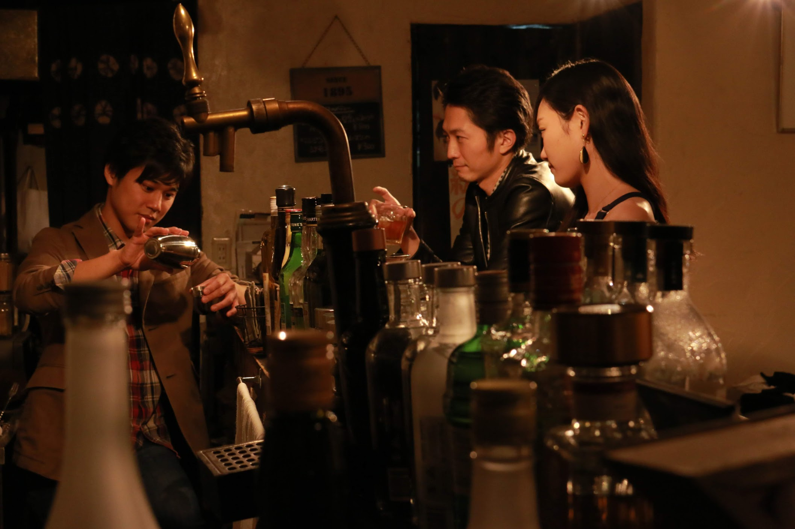

クズ会 エイプリルフール公演
「さっきまで愛した人」(2021)
原案 藤井のりひこ（GEKIGAproject / クズ会)
作・演出 朝比奈史樹（演劇集団nohup / クズ会）
2020年春に上演予定だった公演と同一メンバーでお届けします

CAST
- 小笠原佳秀（殿様ランチ)
- 永瀬千裕
- 藤井のりひこ（GEKIGAproject / クズ会)
STAFF
- 制作：藤井のりひこ（GEKIGAproject / クズ会）
- 宣伝写真：藤澤克成
- 宣伝美術：有賀英二
- 主題歌：杜氏さゆ
- 音響操作・照明操作：鶴谷皇輔（劇団After+Five / クズ会）
- 受付：木所真帆